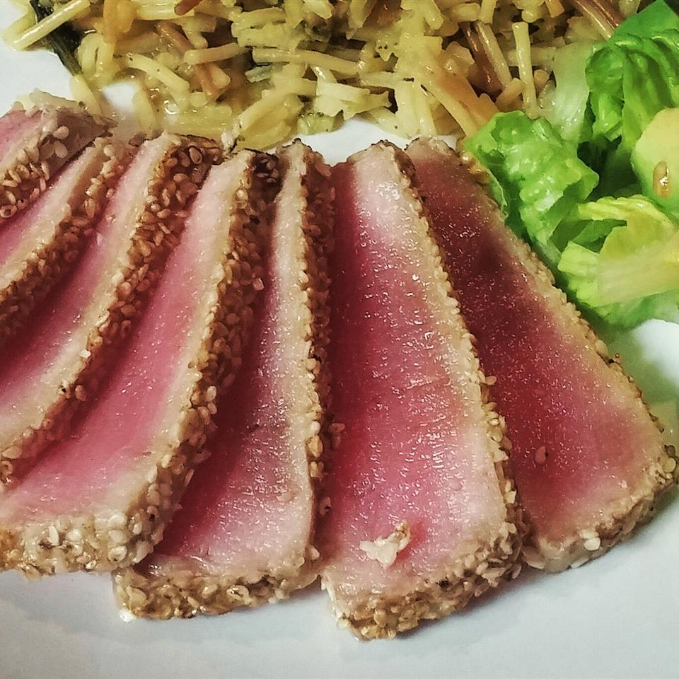
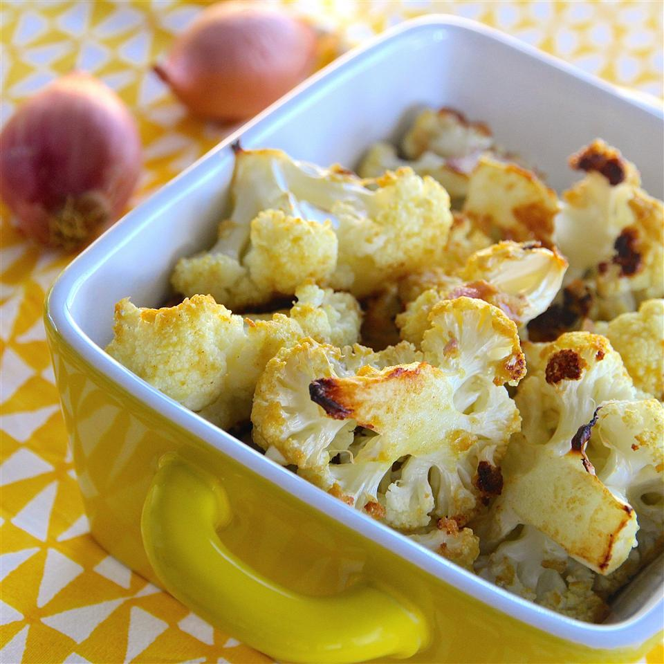

Boiled Chickenmore_vert
186 Calories
Boiled Chickenclose
- Place chicken in a large pot with onions, carrots, celery, and peppercorns; add water to cover.
- Cover pot and bring to a boil; reduce heat to a gentle boil and cook for about 90 minutes, or until chicken meat is falling off of the bone.
- Remove chicken, let cool and shred or chop the meat.
-
Prep: 10 minutes
-
Cook: 1 hour 30 minutes
-
Total: 1 hour 45 minutes
-
Servings: 8
-
Yield: 8 servings

Sesame Seared Tunamore_vert
422 Calories
Sesame Seared Tunaclose
- In a small bowl, stir together with soy sauce, mirin, honey, and sesame oil. Divide into two equal parts. Stir the rice vinegar into one part and set aside as a dipping sauce.
- Spread the sesame seeds out on a plate. Coat the tuna steaks with the remaining soy sauce mixture, then press into the sesame seeds to coat.
- Heat olive oil in a cast iron skillet over high heat until very hot. Place steaks in the pan, and sear for about 30 seconds on each side. Serve with the dipping sauce and wasabi paste
-
Prep: 10 minutes
-
Cook: 10 minutes
-
Total: 25 minutes
-
Servings: 4
-
Yield: 4 steaks

Dijon Roasted Cauliflowermore_vert
164 Calories
Dijon Roasted Cauliflowerclose
- Preheat the oven to 375 degrees F (190 degrees C).
- Put mustard in a large bowl. Slowly pour oil into mustard while continuously mixing to form a smooth sauce; stir in shallot and garlic. Add cauliflower to the mustard sauce and stir to coat. Pour coated cauliflower onto a baking sheet, scraping out any shallot or garlic stuck to the bowl and sprinkling over cauliflower.
- Bake in the preheated oven, stirring 2 to 3 times, until cauliflower is tender, about 45 minutes.
-
Prep: 15 minutes
-
Cook: 50 minutes
-
Total: 1 hour
-
Servings: 4
-
Yield: 4 servings